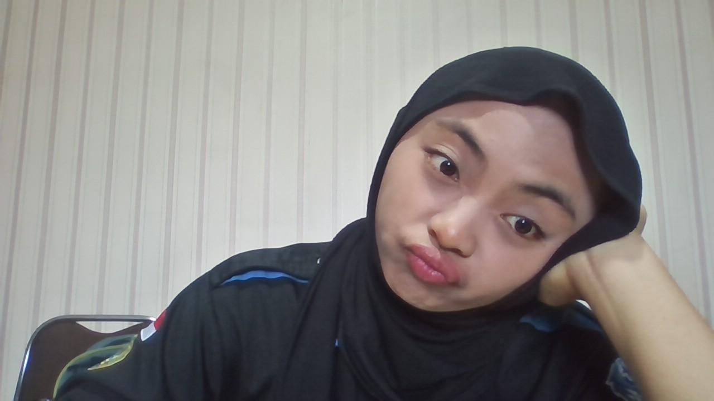

Saya adalah mahasiswa Informatika yang berfokus pada integrasi logika sistem dan desain pengalaman pengguna. Memiliki pengalaman dalam menyusun dokumentasi teknis (UML/BPMN) serta merancang antarmuka aplikasi yang solutif. Saat ini, saya aktif mengelola strategi riset dan publikasi sebagai Student Employee di LPPM Institut saya.

System Analyst | UI/UX Designer
Tentang Saya
Keahlian
System Analysis
- UML & BPMN Modeling
- Requirement Engineering
- Business Process Design
UI/UX & Design
- Wireframing & Prototyping
- User Journey Mapping
- Figma & Mockup Design
Development
- HTML/CSS (Responsive)
- Flutter & Firebase
- PHP & Laravel Basics
Proyek Utama
SpoorGo!
System Analyst: Merancang alur BPMN dan dokumentasi sistem untuk aplikasi pemesanan tiket kereta api mobile.
MediConnect
UI/UX & Analyst: Merancang platform rekrutmen tenaga kesehatan tersertifikasi, fokus pada efisiensi alur pengguna.
SIMRO (Sistem Informasi Ruang Operasi)
Product Development:Merancang alur dan dokumentasi sistem untuk Web SIMRS Ruang Operasi di RSUD Daerah Kota Malang
Kontak
Email: syaniyawaluna@gmail.com
Lokasi: Malang, Jawa Timur
CV: Resume